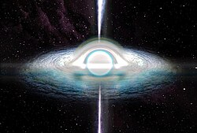
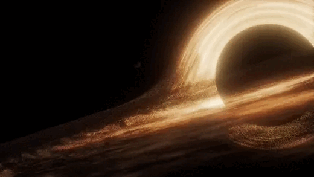
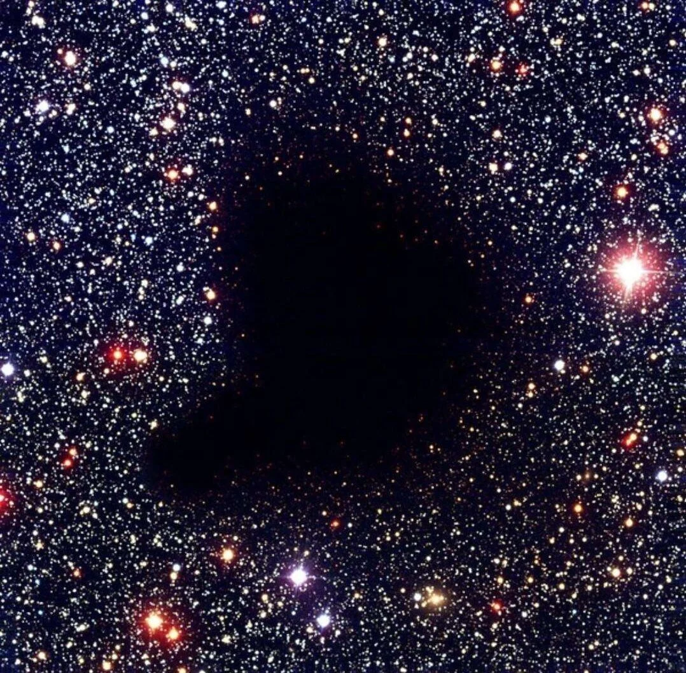
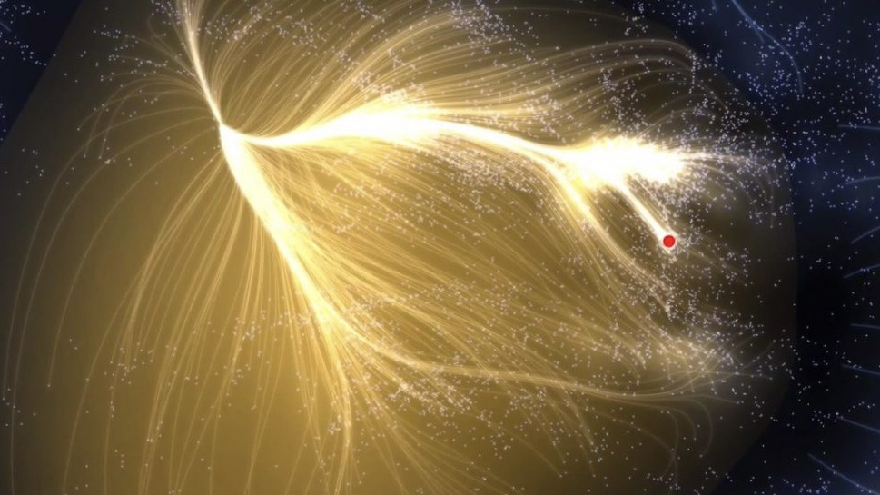
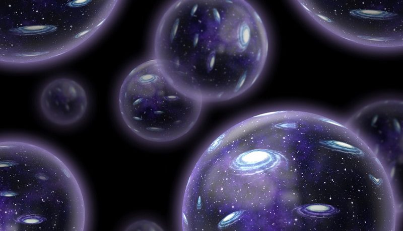

Buraco Branco
Uma hipótese teórica que descreve uma estrutura espacial oposta ao buraco negro. Enquanto nada consegue escapar de um buraco negro, um buraco branco expulsaria matéria e energia constantemente.
Ler MaisO universo é vasto, misterioso e repleto de fenômenos que desafiam a compreensão humana. Nesta seção, exploramos teorias e estruturas cósmicas capazes de mudar completamente nossa visão da realidade.

Uma hipótese teórica que descreve uma estrutura espacial oposta ao buraco negro. Enquanto nada consegue escapar de um buraco negro, um buraco branco expulsaria matéria e energia constantemente.
Ler Mais
Regiões do espaço com gravidade tão intensa que nem mesmo a luz consegue escapar. Cientistas acreditam que eles podem distorcer o espaço-tempo ao redor.
Ler Mais
Uma substância invisível que, segundo teorias, compõe grande parte do universo. Apesar de não poder ser observada diretamente, seus efeitos gravitacionais podem ser detectados.
Ler Mais
Uma misteriosa força gravitacional localizada no espaço profundo que parece atrair milhares de galáxias, incluindo a Via Láctea.
Ler Mais
A teoria sugere que nosso universo pode ser apenas um entre inúmeros outros, cada um com diferentes leis físicas, realidades e possibilidades.
Ler MaisSe o Sol desaparecesse neste exato momento, a Terra continuaria recebendo sua luz por aproximadamente 8 minutos e 20 segundos. Isso acontece porque a luz leva um tempo para viajar pelo espaço.